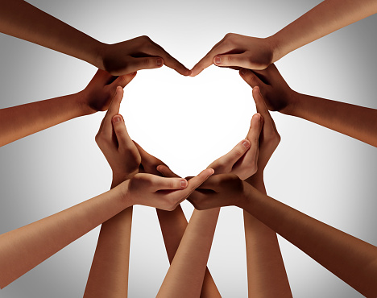

基本資料
姓名：黃佳婷
性別：女
生日：1996.10.13(26歲)
星座：天秤座
戶籍：台灣新北市
學歷：2019年畢業於輔仁大學
進階資訊
興趣：旅遊、運動、美食、學習、靈性、動畫、閱讀
最近正在進行：學習韓文及資訊相關技能、TXR、減脂、捐髮
之後想嘗試：捐血、空中瑜珈、義工志工、illustator
技能：HTML、CSS、JavaScript、Photoshop、powerdirect、word、excel、ppt
遠程目標：全端工程師
日行一善：
參加聖誕路跑(日期)
捐贈點數2~3次/月
捐頭髮(目前進行中)
時刻關注自身健康
身體健康是人類最大的資產，為維持健康身體，提高生活品質，每週達成至少運動三次，每次不小於二十分鐘，擁有最健康的身體是最棒的開始。
每日所需攝水量為：35ml*體重(公斤)，飲食宜清淡均衡，多吃蔬菜水果，應定時健康檢定，追蹤身體狀況。
在這個步調快速的時代，找到適當的紓壓管道，對心靈健康也非常重要。

飲水思源，奉獻與愛
在自己的能力允許範圍內幫助需要的人，成為一名樂觀者。
每個人在不同的人生道路上都會有自己不同的境遇，當遇到需要幫助的時候希望拯救自己的曙光能夠出現，尤其在近幾年悲觀和負面的訊息充斥，幫助有需要的人也可以改變世界的風氣。
雖然小額捐贈看起來渺小，卻可能是他人幸福的基石。最近除了捐贈點，我也在計畫捐頭髮。不斷精進自我實現
俗話說的好：學習如同逆水行舟，不進則退。
活用大腦學習新的知識與技能不僅可以加強創造力、開創新的眼界，還可以防止老年癡呆。經由多思考，多嘗試，找出人生更多可能性。
即便遇到困難也沒關係，多數人都害怕失敗，從錯誤中學習，很多時候可以學到更多，同時加強自己的恢復力及臨場反應。